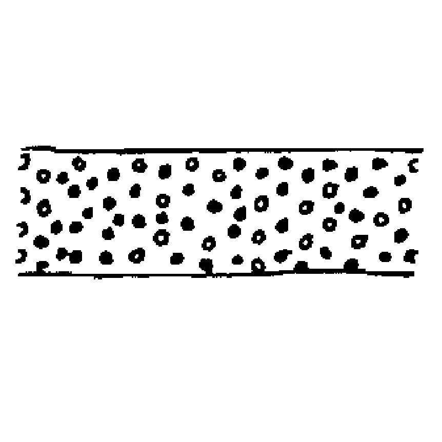

SEPTA
Usage of the terms crest and septa has come to be confusing and ambiguous, so that some standarization in definition seems desirable. In accordance with earlier usage, the term crest is applied to any esentially linear structure on the outer surface of a cyst, or on the surface of the endoblast, positioned along a parasuture or in penitabular position. It is here suggested that the term septum (plural septa) be applied henceforward to similar structures in any other position or whose position cannot be clearly related to peniplates or parasutures.
Sarjeant, W. A. (1982). Dinoflagellate cyst terminology: a discussion and proposals. Canadian journal of botany, 60(6), 922-945. pp. 942.
.TYPES OF SEPTA (SARJEANT, 1982)
| Retiform | Regularly perforated | Irregularly perforated |  Punctate | Fenestrate | Scalloped |
| Vaginate | Undulate | Entire | serrate | Denticulate | Machicolate |
| Crenellate | Echinate | Acanthate | Muricate | Rhodanate |  Hystricate
Hystricate |
| Obicate | Vallate | Loricate | Antleriform |  Phractate
Phractate |
Stauromate |
| Erymnate |